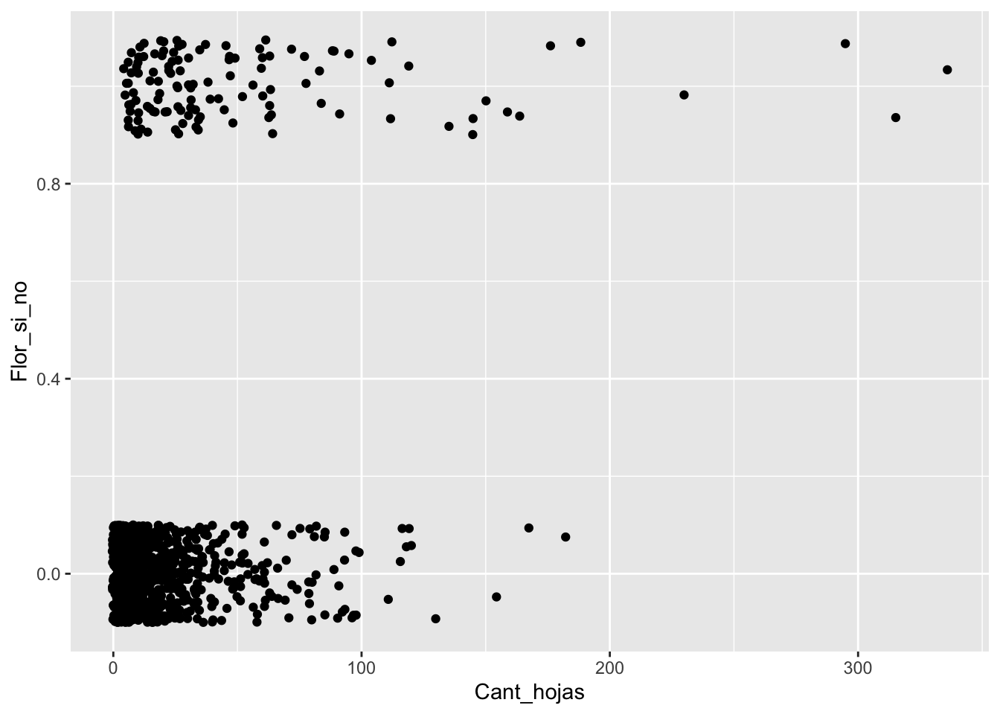
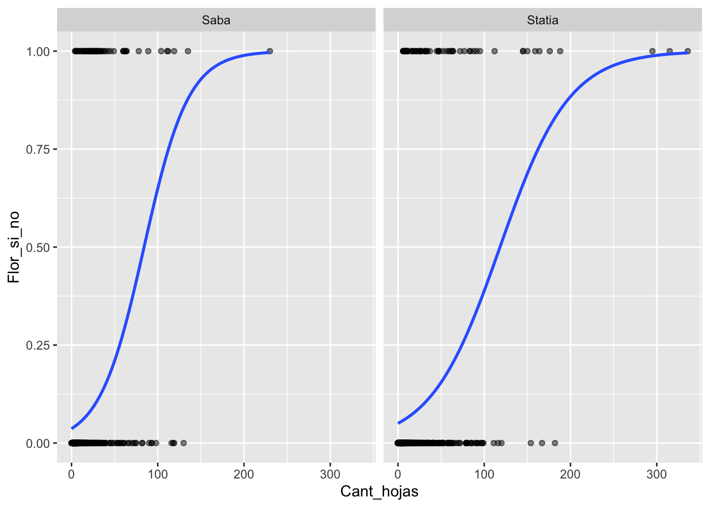
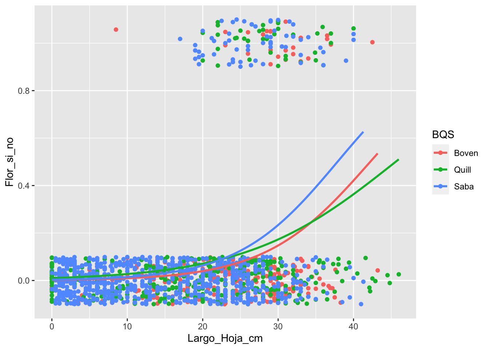

T14a_Regression_logistica
Fecha de la ultima revisión
## [1] "2022-11-07"

library(tidyverse)Regresión Logistica
Esta regresión es utilizada cuando la variable dependiente tiene solamente dos alternativas (representadas de forma numérica, 0 y 1) y la variable independiente es una variable continua.
Brassavola cucullata
Los datos fueron recolectado de dos pequeñas islas del Caribe, San Eustaquio y Saba.
Brassavola cucullata pertenece a la subtribu Laeliinae y es una especie epífita y rupícola que puede formar grandes racimos de brotes. Cada brote está compuesto por un solo tallo de 3.5-12.5 cm de largo y 1-3.5 mm de diámetro y tiene una sola hoja semi-tereta de 16-35 cm de largo y solo un poco más gruesa que el tallo. Las inflorescencias terminales miden 3-30 mm de largo y suelen tener una sola flor. Las flores son en gran parte blancas con las partes delgadas del perianto que a menudo se vuelven de color amarillo pálido hacia sus ápices. El labelo es ovado-acuminado y fimbriado alrededor de la columna. El cunículo se extiende hacia el ovario inferior y no tiene néctar. Las flores engañosas tienen una fragancia nocturna dulce y espesa, que puede perdurar hasta el día. La producción de frutos depende de los polinizadores. Las cápsulas tardan varios meses en desarrollarse y son pediceladas y picudas (restos de la columna); el cuerpo de la cápsula mide entre 2 y 5 cm de largo y produce muchos miles de semillas polvorientas (Ackerman y Collaborators 2014).
En cada una de las tres poblaciones, etiquetamos todas las plantas de B. cucullata que pudimos encontrar. Observamos si cada planta era epífita o epilítica, medimos la altura sobre el suelo, buscamos evidencia de herbivoría foliar, medimos la longitud de la hoja más larga y contamos el número de brotes de hojas, flores y frutos. Si las flores estaban presentes, registramos si habían sido visitadas con éxito o no mediante una inspección visual para la eliminación de polinarios o polinias en el estigma. Estos datos se obtuvieron una vez al año durante la época de floración. Nuestras observaciones en la población de Quill abarcaron 2009-2013, en Boven 2010-2013 y en Saba 2011-2014.


La especie Brasavolla cucullata en la isla de San Eustaquio
Puede encontrar el manuscrito en este enlace, que evalúa la biología de la orquídea y la posibilidad de extinción y como las cabras impacta su supervivencias.
https://www.journals.uchicago.edu/doi/pdf/10.1086/709399
library(readr)
Student_Brassavola <- read_csv("Data_files_csv/Student_Brassavola.csv")
completeBrass=na.omit(Student_Brassavola) # remove NA
head(completeBrass)| Island | Year | Pl_Num | Leaf_Num | LLL | Bud_Num | Fl_Num | Fr_Num | BQS | Flowers_Y_N |
|---|---|---|---|---|---|---|---|---|---|
| Saba | 2.01e+03 | A1701 | 20 | 26 | 0 | 1 | 0 | Saba | 1 |
| Saba | 2.01e+03 | A1702 | 6 | 18 | 0 | 0 | 0 | Saba | 0 |
| Saba | 2.01e+03 | A1703 | 5 | 13 | 0 | 0 | 0 | Saba | 0 |
| Statia | 2.01e+03 | 102 | 33 | 31 | 0 | 0 | 0 | Boven | 0 |
| Statia | 2.01e+03 | 102 | 40 | 34 | 0 | 0 | 0 | Boven | 0 |
| Statia | 2.01e+03 | 102 | 10 | 23 | 0 | 1 | 0 | Boven | 1 |
#library(tidyverse)
#library(dplyr)
unique(completeBrass$Fr_Num)## [1] 0 2 1 3# completeBrass$Fr_Y_N2=ifelse(completeBrass$Fr_Num>0 ,1,0) Metodo de la función base
completeBrass$Fr_Y_N1=ifelse(completeBrass$Fr_Num>0 ,1,0) # Método de dplyr
unique(completeBrass$Fr_Y_N1) # deberia tener solamente dos alternativas, "0" y "1", Frutos no y si## [1] 0 1Evaluar la tendencias centrales y la dispersión de las variables y cambio de nombre de las variables al español.
Brass=completeBrass%>%
dplyr::rename(Isla=Island, Ano=Year, Numero_planta=Pl_Num,
Cant_hojas=Leaf_Num, Largo_Hoja_cm=LLL,
Cant_capullo=Bud_Num, Cant_Flores=Fl_Num,
Cant_Frutos=Fr_Num, BQS=BQS, Flor_si_no=Flowers_Y_N,
Frutos_si_no=Fr_Y_N1)summary(Brass)## Isla Ano Numero_planta Cant_hojas
## Length:1436 Min. :2009 Length:1436 Min. : 0.00
## Class :character 1st Qu.:2011 Class :character 1st Qu.: 3.00
## Mode :character Median :2011 Mode :character Median : 7.00
## Mean :2011 Mean : 16.66
## 3rd Qu.:2012 3rd Qu.: 17.00
## Max. :2014 Max. :336.00
## Largo_Hoja_cm Cant_capullo Cant_Flores Cant_Frutos
## Min. : 0.00 Min. :0.00000 Min. :0.0000 Min. :0.00000
## 1st Qu.: 8.50 1st Qu.:0.00000 1st Qu.:0.0000 1st Qu.:0.00000
## Median : 19.00 Median :0.00000 Median :0.0000 Median :0.00000
## Mean : 18.12 Mean :0.05153 Mean :0.1247 Mean :0.04735
## 3rd Qu.: 26.00 3rd Qu.:0.00000 3rd Qu.:0.0000 3rd Qu.:0.00000
## Max. :108.00 Max. :4.00000 Max. :7.0000 Max. :3.00000
## BQS Flor_si_no Frutos_si_no
## Length:1436 Min. :0.00000 Min. :0.00000
## Class :character 1st Qu.:0.00000 1st Qu.:0.00000
## Mode :character Median :0.00000 Median :0.00000
## Mean :0.08705 Mean :0.03552
## 3rd Qu.:0.00000 3rd Qu.:0.00000
## Max. :1.00000 Max. :1.00000La variable de respuesta, Y.
You can also embed plots, for example:

Modelo Lineal Generalizado
En este modulo se hace una primera introducción a un otro tipo de herramienta para el análisis de datos, denominado Modelo Lineal Generalizado, GLM. Lo interesante de esta acercamiento es que aun que uno tiene una variable de respuesta que no cumple con distribución normal hay múltiples opciones para los análisis. En este modulo solamente se estará presentando el tipo de datos donde la variable de respuesta (Y) es binomial.
Hay tres componentes en cualquier GLM:
Componente aleatorio: se refiere a la distribución de probabilidad de la variable de respuesta (Y); por ejemplo, distribución binomial (0, 1,: Si o NO: Vivo o Muerto). Nota que la variable Y puede tener muchas otras tipo de distribución incluyendo la distribución normal, lognormal, proporción y m,uchos otros.
Variable predictivas: especifica las variables explicativas \(X_1,\ X_2,\ X_3,...X_k\) en el modelo, la combinación lineal se puede expresar con la siguiente forma; por ejemplo, \(\beta_0+\beta_1\cdot x_1+\beta_2\cdot x_2,\ ...+\beta_k\cdot x_k2\) como hemos visto en una regresión lineal.
Función de enlace: η o g (μ): especifica el enlace entre componentes aleatorios y sistemáticos. Dice cómo el valor esperado de la respuesta se relaciona con las variables de la ecuación lineal explicativa.
Los supuestos de la regresión logistica.
- El resultado es la variable es binaria o también conocida como dicótoma (sí o no: presente o ausente, 1 o 0).
- Existe una relación lineal entre el logit (p) de la variable de repuesta y las variables predictora.
- No hay valores extremos o valores atípicos en los predictores continuos.
- No hay correlaciones altas (es decir, multicolinealidad) entre los variables predictores (vea modulo de Correlación).
Comparación de modelos lineal y logistico
l primer paso es entender cual es la diferencia entre una regresión lineal y una regresión logística. Podemos visualizar ambas formula y ver como difieren.
La regresión lineal:
\[Y_i=\beta_0+\beta_1X_i+\beta_2X_i\]
Regresión logistica:
p=P(Y=1) o sea la probabilidad que p tenga el valor de 1 o 1-p= 1-P(Y=1) que seria el valor de 0 en su conjunto de datos.
\[\log\frac{p}{1-p}=\beta_0+\beta_1X_i+\beta_2X_i\] Nota que la primera ecuación es un modelo que trata de predecir el valor de Y en la segunda se estima la probabilidad de que el valor de predictora tenga una valor de 1 o 0. Las probabilidades van a variar de 0 a 1 o sea de 0% a 100%. El vocabulario correcto es que las respuesta son binarias también dicho de la distribución de Bernoulli.
Van a ver en la literatura que la formula se representa tambien de la siguiente forma, donde lo escribe como \(logit(p)\).
\[logit\left(p\right)=\log\frac{p}{1-p}=\beta_0+\beta_1X_i+\beta_2X_i\]
En el siguiente enlace se puede encontrar más información https://en.wikipedia.org/wiki/Logistic_regression
Se evalúa tres modelos: 1. la probabilidad de tener flores es relacionado a la cantidad de hojas (el tamaño de la planta). 2. la probabilidad de tener flores es relacionado a la hoja más larga de la planta (el tamaño de la planta). 3. la probabilidad de tener flores es relacionado a la hoja más larga de la planta y a la cantidad de hojas.
Generalized Linear Model = glm
BrassModel.1 <- glm(Flor_si_no ~ Cant_hojas,
data = Brass, family = binomial())
summary(BrassModel.1)##
## Call:
## glm(formula = Flor_si_no ~ Cant_hojas, family = binomial(), data = Brass)
##
## Deviance Residuals:
## Min 1Q Median 3Q Max
## -2.2129 -0.3608 -0.3212 -0.3120 2.4571
##
## Coefficients:
## Estimate Std. Error z value Pr(>|z|)
## (Intercept) -3.088221 0.134013 -23.04 <2e-16 ***
## Cant_hojas 0.029925 0.002987 10.02 <2e-16 ***
## ---
## Signif. codes: 0 '***' 0.001 '**' 0.01 '*' 0.05 '.' 0.1 ' ' 1
##
## (Dispersion parameter for binomial family taken to be 1)
##
## Null deviance: 849.11 on 1435 degrees of freedom
## Residual deviance: 722.57 on 1434 degrees of freedom
## AIC: 726.57
##
## Number of Fisher Scoring iterations: 5BrassModel.2 <- glm(Flor_si_no ~ Largo_Hoja_cm,
data = Brass, family = binomial())
summary(BrassModel.2)##
## Call:
## glm(formula = Flor_si_no ~ Largo_Hoja_cm, family = binomial(),
## data = Brass)
##
## Deviance Residuals:
## Min 1Q Median 3Q Max
## -3.8476 -0.4723 -0.2920 -0.1568 2.8322
##
## Coefficients:
## Estimate Std. Error z value Pr(>|z|)
## (Intercept) -4.96559 0.33283 -14.919 <2e-16 ***
## Largo_Hoja_cm 0.11451 0.01199 9.553 <2e-16 ***
## ---
## Signif. codes: 0 '***' 0.001 '**' 0.01 '*' 0.05 '.' 0.1 ' ' 1
##
## (Dispersion parameter for binomial family taken to be 1)
##
## Null deviance: 849.11 on 1435 degrees of freedom
## Residual deviance: 722.30 on 1434 degrees of freedom
## AIC: 726.3
##
## Number of Fisher Scoring iterations: 6BrassModel.3 <- glm(Flor_si_no ~ Cant_hojas+Largo_Hoja_cm,
data = Brass, family = binomial())
summary(BrassModel.3)##
## Call:
## glm(formula = Flor_si_no ~ Cant_hojas + Largo_Hoja_cm, family = binomial(),
## data = Brass)
##
## Deviance Residuals:
## Min 1Q Median 3Q Max
## -3.3168 -0.4122 -0.2754 -0.1728 2.4903
##
## Coefficients:
## Estimate Std. Error z value Pr(>|z|)
## (Intercept) -4.673981 0.330208 -14.155 < 2e-16 ***
## Cant_hojas 0.019103 0.003132 6.100 1.06e-09 ***
## Largo_Hoja_cm 0.080198 0.013034 6.153 7.60e-10 ***
## ---
## Signif. codes: 0 '***' 0.001 '**' 0.01 '*' 0.05 '.' 0.1 ' ' 1
##
## (Dispersion parameter for binomial family taken to be 1)
##
## Null deviance: 849.11 on 1435 degrees of freedom
## Residual deviance: 677.99 on 1433 degrees of freedom
## AIC: 683.99
##
## Number of Fisher Scoring iterations: 6Removiendo el intercepto
Si no le interesa el intercepto se añade un “-1” después de la #Los valores de interes en nuestro caso son el intercepto y la pendiente (valor que se encuentra debajo del intercepto).
names(Brass)## [1] "Isla" "Ano" "Numero_planta" "Cant_hojas"
## [5] "Largo_Hoja_cm" "Cant_capullo" "Cant_Flores" "Cant_Frutos"
## [9] "BQS" "Flor_si_no" "Frutos_si_no"BrassModel.1.1 <- glm(Flor_si_no ~ Cant_hojas+BQS+Largo_Hoja_cm-1,
data = Brass, family = binomial())
summary(BrassModel.1.1)##
## Call:
## glm(formula = Flor_si_no ~ Cant_hojas + BQS + Largo_Hoja_cm -
## 1, family = binomial(), data = Brass)
##
## Deviance Residuals:
## Min 1Q Median 3Q Max
## -3.2232 -0.4090 -0.2656 -0.1737 2.5854
##
## Coefficients:
## Estimate Std. Error z value Pr(>|z|)
## Cant_hojas 0.020693 0.003221 6.425 1.31e-10 ***
## BQSBoven -5.425491 0.428570 -12.660 < 2e-16 ***
## BQSQuill -4.704079 0.392591 -11.982 < 2e-16 ***
## BQSSaba -4.586157 0.328376 -13.966 < 2e-16 ***
## Largo_Hoja_cm 0.083145 0.013310 6.247 4.19e-10 ***
## ---
## Signif. codes: 0 '***' 0.001 '**' 0.01 '*' 0.05 '.' 0.1 ' ' 1
##
## (Dispersion parameter for binomial family taken to be 1)
##
## Null deviance: 1990.72 on 1436 degrees of freedom
## Residual deviance: 668.85 on 1431 degrees of freedom
## AIC: 678.85
##
## Number of Fisher Scoring iterations: 6Estimado las probabilidades
Predecir el número de frutas usando la ecuación, utilizando los resultados del modelo anterior
\[P(Y)\quad =\quad \frac { 1 }{ 1+{ e }^{ -(b+m*{ x }_{ i }) } }\] \[P(Y)\quad =\quad \frac { 1 }{ 1+{ e }^{ -((intercepto)+pendiente*variable.predictora) } }\] # Se usa esta ecuacion para predecir un valor de ‘Y’ especifico para un valor de una variable ‘X’ de interes.
summary(BrassModel.1)##
## Call:
## glm(formula = Flor_si_no ~ Cant_hojas, family = binomial(), data = Brass)
##
## Deviance Residuals:
## Min 1Q Median 3Q Max
## -2.2129 -0.3608 -0.3212 -0.3120 2.4571
##
## Coefficients:
## Estimate Std. Error z value Pr(>|z|)
## (Intercept) -3.088221 0.134013 -23.04 <2e-16 ***
## Cant_hojas 0.029925 0.002987 10.02 <2e-16 ***
## ---
## Signif. codes: 0 '***' 0.001 '**' 0.01 '*' 0.05 '.' 0.1 ' ' 1
##
## (Dispersion parameter for binomial family taken to be 1)
##
## Null deviance: 849.11 on 1435 degrees of freedom
## Residual deviance: 722.57 on 1434 degrees of freedom
## AIC: 726.57
##
## Number of Fisher Scoring iterations: 5exp(1) #= e## [1] 2.718282e=exp(1)
e## [1] 2.718282P_10=1/(1+2.7182818284^-(-3.065 +0.0297*150))
P_10## [1] 0.8005922P_10=1/(1+exp(1)^-(-3.065 +0.0297*100))
P_10## [1] 0.4762678P_25=1/(1+exp(-(-3.065 +0.0297*25)))
P_25## [1] 0.08927658P_50=1/(1+e^-(-3.065 +0.0297*50))
P_50## [1] 0.1707955P_70=1/(1+e^-(-3.065 +0.0297*70))
P_70## [1] 0.2717029P_150=1/(1+e^-(-3.065 +0.0297*150))
P_150## [1] 0.8005922Visualizando una regresión logistica
names(Brass)## [1] "Isla" "Ano" "Numero_planta" "Cant_hojas"
## [5] "Largo_Hoja_cm" "Cant_capullo" "Cant_Flores" "Cant_Frutos"
## [9] "BQS" "Flor_si_no" "Frutos_si_no"library(ggplot2)
ggplot(Brass, aes(Cant_hojas,Flor_si_no))+
geom_point()
Reducir solapamiento de los puntos
Usar geom_jitter
ggplot(el archivo de datos, aes(las variables continuas))
• geom jitter(alpha, color, fill, shape, size)
◦ alpha: la intensidad del color ◦ color: el color de la línea alrededor
de las barras ◦ fill: el color de las barras ◦ linetype: representa el
estilo de línea; ver sección “Especificación Estética” ◦ size:
representa el grosor de la línea ◦ weight: para modificar el valor
original; entonces no sería, por ejemplo, el conteo/suma de los valores
si no un valor ponderado (promedio ponderado)
ggplot(Brass, aes(Cant_hojas,Flor_si_no))+
geom_jitter(height = 0.10)
Gráfico con ajuste binomial
names(Brass)## [1] "Isla" "Ano" "Numero_planta" "Cant_hojas"
## [5] "Largo_Hoja_cm" "Cant_capullo" "Cant_Flores" "Cant_Frutos"
## [9] "BQS" "Flor_si_no" "Frutos_si_no"ggplot(Brass, aes(Cant_hojas,Flor_si_no))+
geom_point(alpha=.5) +
stat_smooth(method="glm", se=TRUE, method.args = list(family=binomial))
El modelo de regresión binomial
summary(BrassModel.1)##
## Call:
## glm(formula = Flor_si_no ~ Cant_hojas, family = binomial(), data = Brass)
##
## Deviance Residuals:
## Min 1Q Median 3Q Max
## -2.2129 -0.3608 -0.3212 -0.3120 2.4571
##
## Coefficients:
## Estimate Std. Error z value Pr(>|z|)
## (Intercept) -3.088221 0.134013 -23.04 <2e-16 ***
## Cant_hojas 0.029925 0.002987 10.02 <2e-16 ***
## ---
## Signif. codes: 0 '***' 0.001 '**' 0.01 '*' 0.05 '.' 0.1 ' ' 1
##
## (Dispersion parameter for binomial family taken to be 1)
##
## Null deviance: 849.11 on 1435 degrees of freedom
## Residual deviance: 722.57 on 1434 degrees of freedom
## AIC: 726.57
##
## Number of Fisher Scoring iterations: 5Vusualizando diferentes grupos
En este gráfico se osbserva el valor de la pendiente, el mismo aumenta cuando el numero de hojas se aproxima a 100 (por ende al acercarnos a este valor el valor de nuestra variable de respuesta es mayor aumenta o es mayor).
names(Brass)## [1] "Isla" "Ano" "Numero_planta" "Cant_hojas"
## [5] "Largo_Hoja_cm" "Cant_capullo" "Cant_Flores" "Cant_Frutos"
## [9] "BQS" "Flor_si_no" "Frutos_si_no"ggplot(Brass, aes(Cant_hojas,Flor_si_no))+
geom_point(alpha=.5) +
stat_smooth(method="glm", se=FALSE, method.args = list(family=binomial))+
facet_wrap(~Isla)
Solapamiento de los ajustes binomial por grupo
names(Brass)## [1] "Isla" "Ano" "Numero_planta" "Cant_hojas"
## [5] "Largo_Hoja_cm" "Cant_capullo" "Cant_Flores" "Cant_Frutos"
## [9] "BQS" "Flor_si_no" "Frutos_si_no"ggplot(Brass, aes(Cant_hojas,Flor_si_no, colour=BQS))+
geom_point(alpha=.5) +
stat_smooth(method="glm", se=TRUE, method.args = list(family=binomial))
Evaluate using the Length of the longest leaf
names(Brass)## [1] "Isla" "Ano" "Numero_planta" "Cant_hojas"
## [5] "Largo_Hoja_cm" "Cant_capullo" "Cant_Flores" "Cant_Frutos"
## [9] "BQS" "Flor_si_no" "Frutos_si_no"ggplot(Brass, aes(Largo_Hoja_cm,Flor_si_no))+
geom_jitter(height = 0.25)
Remover el valor sesgado
El valor se remueve ya que no es posible una hoja de más de un metro
Nota que se hace un subgrupo (subset) de los datos, usando la función subset(el data frame, la condición)
names(Brass)## [1] "Isla" "Ano" "Numero_planta" "Cant_hojas"
## [5] "Largo_Hoja_cm" "Cant_capullo" "Cant_Flores" "Cant_Frutos"
## [9] "BQS" "Flor_si_no" "Frutos_si_no"ggplot(subset(Brass,Largo_Hoja_cm<90), aes(Largo_Hoja_cm,Flor_si_no, colour=BQS))+
geom_jitter(height = 0.10)+
stat_smooth(method="glm", se=FALSE, method.args = list(family=binomial))
Selecionar el mejor modelo
Vea modulo T16 Criterio de Información